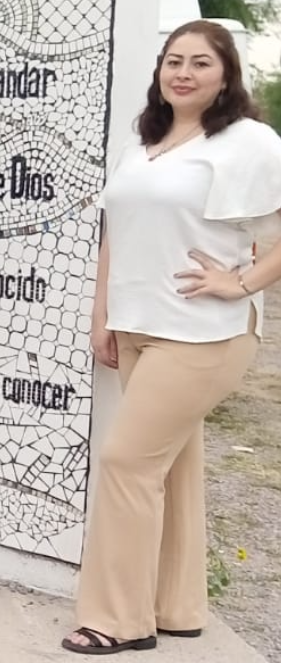
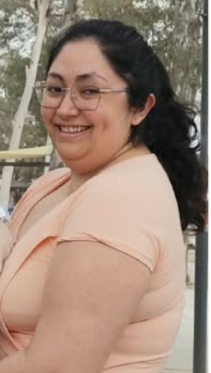

Pediatría · Neonatología
Dra. Patricia Noelia
Leiva Ibañez
Pediatra Neonatóloga. Atención orientada a la salud de bebés, niñas y niños, desde los primeros días de vida y durante su crecimiento.
Dras. Leiva Ibañez · Tucumán
Pediatría, Neonatología y Clínica Médica / Terapia. Dos especialidades, una misma vocación: acompañarte en el cuidado de tu salud y la de tu familia.


Conocé a las doctoras
Patricia Noelia y Maria Veronica Leiva Ibañez. Dos hermanas dedicadas a la medicina, con atención en Aguilares y San Miguel de Tucumán.
Pediatra Neonatóloga. Atención orientada a la salud de bebés, niñas y niños, desde los primeros días de vida y durante su crecimiento.
Clínica Médica / Terapia. Atención orientada a la salud de las personas adultas, con una mirada integral de cada consulta.
Áreas de atención
Conocé las especialidades de las doctoras para orientar tu consulta.
La salud de niñas y niños, su crecimiento y desarrollo como centro de la atención pediátrica.
Atención del recién nacido, una etapa especial que requiere una mirada médica específica.
Una mirada integral de la salud en la adultez y de las necesidades de atención de cada persona.
Cerca tuyo, en Tucumán
Ambas doctoras atienden en Aguilares y San Miguel de Tucumán, Argentina.
Tucumán, Argentina
Tucumán, Argentina
Las direcciones de los consultorios y los horarios de atención se publicarán una vez confirmados.
Turnos y contacto
Este será el espacio para acceder a los canales de contacto y solicitar tu turno con las doctoras.
La reserva de turnos online todavía no está habilitada. Los canales de contacto se publicarán aquí cuando estén disponibles.